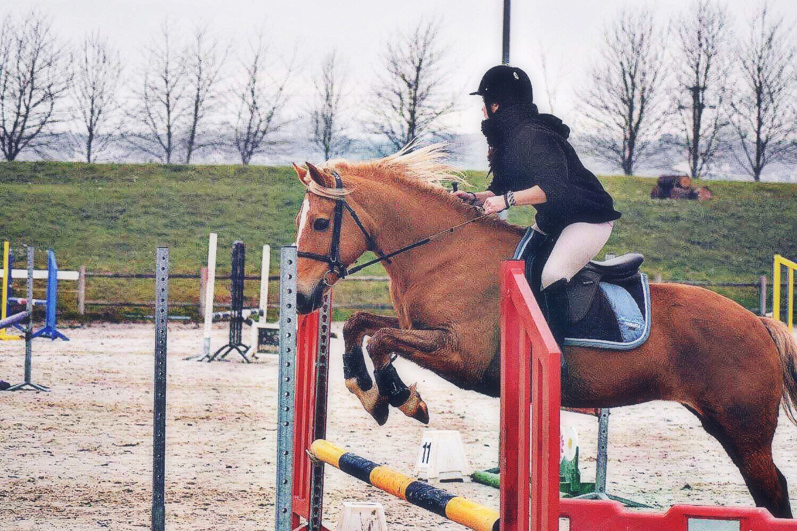
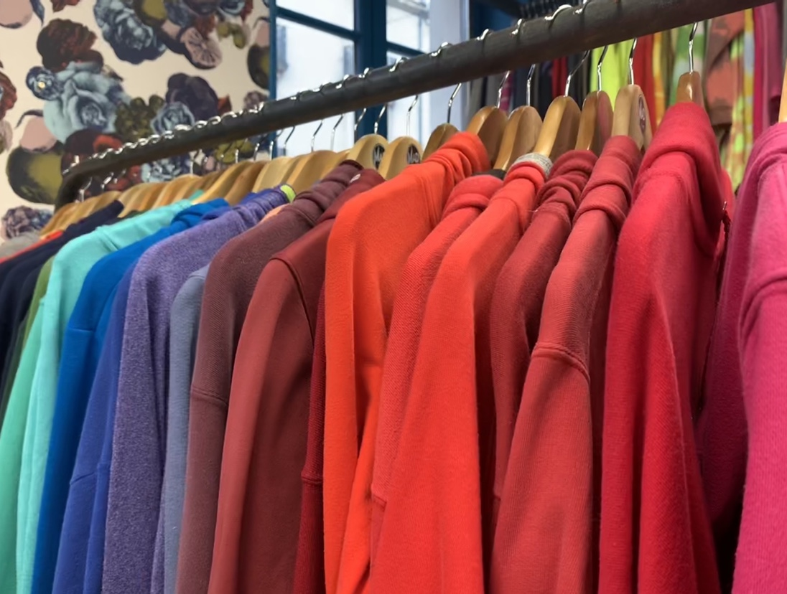

PORTRAIT D'UNE VOYAGEUSE

Petite et concentrée
Je m’appelle Emilie Fournel, 1m 54 de créativité, j’ai
18 ans et je suis en dessous de la moyenne de taille
des femmes. Je voulais, il y a longtemps devenir
gendarme à cheval, mais mon petit problème de
gabarit à rendu cela impossible.
J’ai passé un bac
ES en juin 2019 à Val De Seine que j’ai obtenu puis
je suis arrivée à la Normandie Web School. J’y suis
principalement pour le web design mais je ne suis
pas fermée au développement ou au marketing, qui
sont proposés.
J’ai le contact relativement facile
avec les autres, mes amis me pensent sociable
et disent de moi que j’ai toujours le sourire aux lèvres.
J’ai eu la chance de visiter de nombreux pays
comme le Canada, l’Egypte ou les Etats-Unis.
Sur le plan culturel et personnel c’est très enrichissant.

En selle !
Je monte à cheval depuis 12 ans maintenant et
je suis une cavalière de loisirs. Au commencement,
j’ai passé 7 ans baignée d’amour dans
un club qui ne me correspondait malheureusement
pas. Je suis donc partie vers un endroit meilleur,
en quête de réelle progression. Et en un an,
je pense en avoir beaucoup plus appris qu’avec
mes 7 années précédentes. J’ai pu m’essayer
à de nouvelles disciplines comme le trotting
ou le cross par exemple. L’équitation est l’un
des sports les plus dangereux, puisque
qu’une chute peut être fatale.
J’apprécie donc particulièrement le saut d’obstacle,
cela procure de l’adrénaline constamment.
J’ai connu de nombreuses chutes mais je me suis
toujours relevée, cela m’a rendue plus forte.
Désormais, je franchis les obstacles sans
crainte de ce qui se passera de l’autre côté.

Les fripperies comme art de vie
Ah les friperies ! L’art de choisir des vêtements
de seconde main.
Le goût du vintage m’attire, est-ce lié à ma nostalgie
des années 80 ?
Varier et marier différents styles vestimentaires est un
jeu de construction. Dans une friperie je trouve des
vêtements qui me correspondent bien mieux que ceux vendus
dans de grands magasins. Non seulement ils sont moins
chers, mais leur donner une seconde vie est
diablement intéressant. Déjà portés ? Et alors ? Ils ont vécu
une histoire avant, et je leur en offre une nouvelle aujourd’hui.
À moi les chemises d’hommes et les fringues oversize. Sur
un petit modèle, effet garanti.
Jouer avec les tissus, c’est déjà du design.